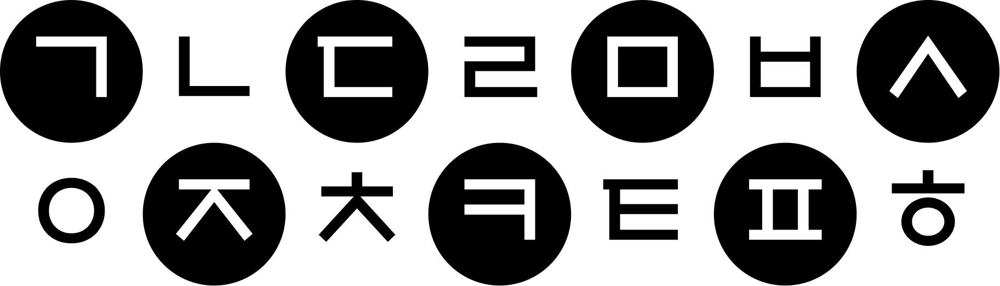

상형(象形)은 한자의 조자법에서 가장 바탕을 이루는 논리입니다만, 훈민정음이 한자와 맥락을 같이 한다고 보기는 어렵습니다. 한자의 상형은 보이는 것을 그대로 상형하고 그 형태의 고유한 뜻도 그대로 취합니다. 그러나 훈민정음에서 말하는 상형은 한자럼 무엇의 모양을 본뜨거나 그것을 추상화한 형태가 아니라, 음을 만드는 음성 기관을 상형 것입니다. 훈민정음은 보이지 않는 소리의 근원을 찾아 그것을 보이는 형태로 상형했습니다. 그러니 한자가 사물을 상형했다면, 정음은 음을 상형한 것입니다.
정음의 상형은 자음자로 음성 기관을 본떠 다섯 개의 기본음, 아음(牙音, ㄱ), 설음(舌音, ㄴ), 순음(脣音, ㅁ), 치음(齒音, ㅅ), 후음(喉音, ㅇ)을 정하고, 모음자로 천지인 즉 "주역"의 삼재를 의미하는 하늘의 둥근 점(•), 땅의 지평선(ㅡ), 서 있는 사람의 모습(ㅣ), 이렇게 세 개의 기본자를 정해 이들로부터 스물여덟자를 파생하였습니다.
아음
ㄱ ㅋ ㄲ
설음
ㄴ ㄷ ㅌ ㄹ ㄸ
순음
ㄷ ㅂ ㅍ ㅃ
치음
ㅅ ㅈ ㅊ ㅆ ㅉ
후음
ㅇ ㅎ
자음자는 모두 열입곱 자이며(오늘날에는 열네 자만 사용됩니다), 자음 체계는 음성 기관에서 소리가 나는 자리에 따라 다섯 가지로 나뉩니다. 아음(ㄱ, 혀뿌리소리)은 혀뿌리가 열린 입천장을 막는 모양, 설음(ㄴ, 혀끝소리)은 혀끝이 잇몸에 닿은 모양, 순음ㅁ, 입술소리)은 입술 모양, 치음(ㅅ, 잇소리)은 이의 모양, 후음(ㅇ, 목구멍소리)은 목구멍의 모양을 본뜬 것입니다.
자음자 다섯 가지의 소리군은 계열마다 서로 비슷한 모양으로 파생하는데, 그 원칙은 기본자보다 소리의 힘이 세지는 순서대로 글자 줄기를 하나씩 덧붙여 갑니다. 또한 가장 된소리는 글자를 반복합니다. 아음(ㄱ,ㅋ,ㄲ), 설음(ㄴ,ㄷ,ㅌ,ㄹ,ㄸ), 순음(ㅁ,ㅂ,ㅍ,ㅃ), 치음(ㅅ,ㅈ,ㅊ,ㅆ,ㅉ), 후음(ㅇ,ㅎ)입니다.
모음자는 모두 열한 자이며(오늘날에는 열 자만 사용됩니다). 모음자는 기본자를 바탕으로 음양 법칙에 따라 밝은 소리는 가로획이나 세로획의 위쪽이나 오른쪽에 점을 찍고, 어두운 소리는 가로획이나 세로획의 아래쪽이나 왼쪽에 점을 찍으며, 중간 소리는 점을 찍지 않습니다.
모음자는 일곱 개의 단모음자모(•, ㅡ, ㅣ, ㅗ, ㅜ, ㅏ, ㅓ)와 반모음을 조합한 네 개의 자모(ㅛ, ㅠ, ㅑ, ㅕ)를 합해 모두 열한 자로 구성되었습니다. 여기에서 ㅗ, ㅜ, ㅏ, ㅓ는 하늘과 땅에서 처음 나온 것, 즉 초출되었다고 하며, ㅛ, ㅠ, ㅑ, ㅕ는 두 번째로 나온 것, 즉 재출되었다고 합니다.